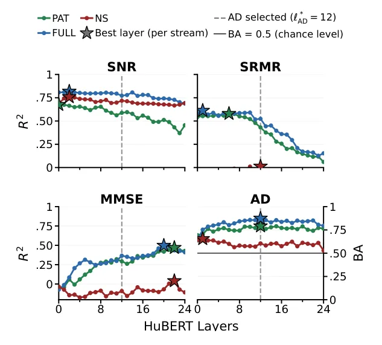
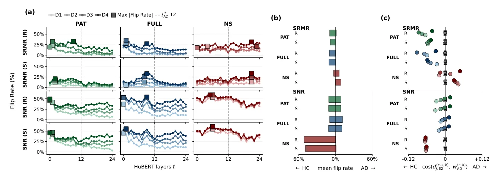
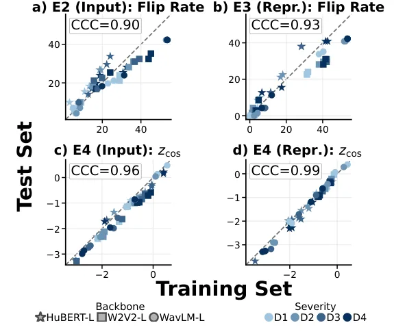

O problema: modelos que ouvem o ambiente, não o paciente
Sistemas de detecção de Alzheimer baseados em fala prometem escalabilidade e baixo custo. A ideia é simples: gravar alguém descrevendo uma imagem, extrair padrões da voz e treinar um classificador para separar controles saudáveis de pacientes com Alzheimer. Nos últimos anos, esses sistemas passaram a usar modelos de self-supervised learning (SSL) pré-treinados em grandes corpora de áudio — como Wav2Vec2, HuBERT e WavLM — que aprendem representações diretamente do áudio bruto, sem transcrição.
O ganho é enorme: esses modelos capturam prosódia, pausas, hesitações e outros sinais que podem indicar declínio cognitivo. Mas há um problema: eles também capturam tudo o que está no áudio. Ruído de fundo, reverberação da sala, qualidade do microfone. E trabalhos recentes mostraram que é possível prever Alzheimer apenas com os trechos de silêncio e ruído ambiente, sem nenhuma fala do paciente.
Este paper, conduzido por pesquisadores do Hertie Institute for AI in Brain Health, Tübingen AI Center, Sony Group Corporation e Friedrich-Alexander-University Erlangen-Nürnberg, vai além: ele pergunta se esses fatores acústicos não apenas estão codificados nas representações, mas se eles de fato influenciam sistematicamente as predições de Alzheimer — mesmo quando há fala disponível. A diferença é sutil, mas crucial: uma coisa é o modelo poder decodificar ruído; outra é ele usar ruído para decidir o diagnóstico.
A ideia: intervir, não apenas observar
A abordagem clássica para investigar o que um modelo aprendeu é a decodificação linear: você treina um classificador simples em cima das representações internas e vê se consegue recuperar alguma variável de interesse. Se conseguir, a informação está lá. Mas isso não prova que o modelo downstream usa essa informação.
Os autores propõem um framework de intervenção controlada. A ideia é manipular fatores acústicos — ruído e reverberação — de forma sistemática e medir se essas manipulações alteram as predições de Alzheimer. Se alterarem, e se essas alterações forem estruturadas (não aleatórias), isso indica que o classificador está funcionalmente sensível a esses fatores.
O experimento usa o dataset ADReSSo, que contém gravações de 166 pessoas (79 controles, 87 com Alzheimer) descrevendo a imagem Cookie Theft, com um conjunto de teste separado de 71 pessoas. Os autores aplicam detecção de atividade de voz (VAD) para separar três fluxos de áudio: PAT (apenas fala do participante), NS (trechos sem fala, só silêncio e ambiente) e FULL (gravação completa).
Eles então geram versões contrafactuais dessas gravações, aplicando ruído e reverberação controlados em quatro níveis de severidade (D1 a D4, de leve a severo). O ruído é aditivo: real (gravações ambientais do MUSAN) ou sintético (ruído gaussiano com SNR de 20, 10, 5 e 0 dB). A reverberação é convolutiva: real (respostas de impulso de salas medidas) ou sintética (simulada com pyroomacoustics, T60 de 0.3 a 0.9 segundos).
Experimento 1: o que está codificado nas camadas do modelo
Antes de intervir, os autores mapeiam o que está codificado em cada camada do HuBERT-Large (24 camadas). Eles treinam regressões lineares para prever SNR, SRMR e MMSE (o escore cognitivo padrão) e um classificador logístico para Alzheimer, usando validação cruzada aninhada de 5 folds.
O resultado é revelador: SNR é altamente decodificável em todas as camadas e todos os fluxos (R² ≈ 0.8 em FULL), indicando que a informação sobre ruído persiste em toda a profundidade do modelo. SRMR é decodificável nas camadas iniciais de PAT e FULL (R² ≈ 0.6), mas cai com a profundidade — o que faz sentido, já que reverberação depende de estrutura temporal de fala. MMSE, o escore cognitivo, aumenta com a profundidade, atingindo R² ≈ 0.5 nas camadas finais.
A classificação de Alzheimer atinge o pico na camada 12 (balanced accuracy de 0.87), que os autores chamam de ℓ*_AD. Importante: mesmo no fluxo NS (apenas silêncio e ambiente), o modelo consegue classificar Alzheimer acima do acaso, e SNR continua altamente decodificável. Mas SRMR e MMSE são praticamente não-decodificáveis em NS, o que é esperado: sem fala, não há estrutura de modulação nem conteúdo linguístico.

Experimento 2: intervir no áudio e medir o impacto
Agora vem a parte central: os autores pegam as gravações limpas, aplicam as degradações acústicas controladas e avaliam as mesmas gravações com o classificador congelado treinado no áudio limpo. A métrica principal é a taxa de flip: quantas predições mudam de classe (HC→AD ou AD→HC) quando o áudio é degradado.
O resultado é claro: intervenções de ruído (SNR) causam muito mais flips do que reverberação (SRMR). No fluxo FULL, camada 1, ruído sintético severo (D4) causa 51% de flips, contra apenas 8% para reverberação. A taxa de flip geralmente aumenta com a severidade da degradação (D1→D4). A exceção é NS sob ruído: mesmo D1 (leve) já causa flips comparáveis a D4, indicando alta sensibilidade ao ruído em regiões sem fala.
Mais importante: os flips não são aleatórios. Sob reverberação, PAT e FULL mostram predominância de flips AD→HC (o modelo passa a classificar como saudável). Sob ruído, NS mostra forte predominância de AD→HC, enquanto PAT e FULL mostram um padrão dependente de severidade, com mais flips HC→AD conforme o ruído aumenta.
Os autores então medem o alinhamento geométrico: eles calculam o vetor de mudança na representação (limpo vs. degradado) e medem o cosseno com a direção de decisão do classificador (o vetor de pesos do classificador logístico). Um cosseno positivo significa que a mudança aponta para AD; negativo, para HC. Em 44 de 48 condições (91.7%), o alinhamento cai fora do intervalo de 95% de direções aleatórias de mesma magnitude. Isso mostra que as mudanças são sistematicamente estruturadas, não ruído aleatório.

Experimento 3: intervir diretamente no espaço de representação
Degradar o áudio e passar pelo encoder é uma forma de intervenção. Mas os autores vão além: eles intervêm diretamente no espaço de representação. A ideia é calcular a direção média de mudança causada pela degradação acústica (por exemplo, limpo vs. ruído D4) em uma camada r, e então aplicar essa direção como perturbação em outra camada (onde o classificador opera).
Formalmente: eles extraem representações de áudio limpo e degradado na camada r, calculam o vetor de diferença médio δ_r, normalizam pela magnitude média ρ_r, e então adicionam α·δ_r à representação limpa na camada onde o classificador foi treinado. Se α=+1, estão aplicando a direção de degradação; se α=−1, estão revertendo.
Os resultados confirmam a sensibilidade: a taxa de flip atinge 42% na camada r*=9 quando aplicam a direção de ruído D4 derivada de FULL. Isso não é explicado pela magnitude da perturbação, que na verdade diminui com a profundidade (de 83 na camada 0 para 64 na camada 9). Ou seja, mesmo perturbações menores, se alinhadas com a direção de degradação acústica, causam grandes mudanças na predição.
Os flips são novamente direcionais: em PAT e FULL, tanto ruído quanto reverberação causam predominantemente flips AD→HC. Em NS, ruído mantém a direção HC, mas reverberação causa poucos flips, principalmente AD. O alinhamento geométrico replica o padrão: PAT e FULL apontam para HC, frequentemente fora do intervalo de direções aleatórias. E quando invertem α de +1 para −1, o efeito no logit inverte quase perfeitamente (correlação de Pearson de −0.98), confirmando reversibilidade direcional.
Generalização: outros modelos e o conjunto de teste
Os autores repetem toda a análise com Wav2Vec2-Large e WavLM-Large, e avaliam o conjunto de teste separado (n=71) usando o modelo treinado no conjunto completo de treino, sem reajustar nenhuma escolha de análise.
A generalização é forte. Eles usam o coeficiente de concordância de Lin (CCC) para medir o acordo entre treino e teste, tanto em associação quanto em magnitude. Para flips de predição, o CCC médio entre treino e teste é 0.71 para HuBERT, 0.68 para Wav2Vec2 e 0.66 para WavLM. Para alinhamento geométrico (padronizado por direções aleatórias), o CCC é 0.58, 0.54 e 0.51, respectivamente.
Isso significa que os efeitos de intervenção não são artefatos de overfitting no conjunto de treino: eles se replicam no teste, em múltiplos backbones SSL, e mantêm a estrutura direcional. Os autores destacam que HuBERT, que teve a melhor performance de classificação (BA=0.87), também mostrou os efeitos de intervenção mais fortes — sugerindo que alta acurácia não implica robustez.

O que isso significa para modelos clínicos
Os resultados têm implicações diretas para o uso clínico de modelos de fala. Primeiro: alta performance preditiva e ausência de diferença significativa em um fator acústico medido não são suficientes para garantir robustez. SNR não diferia entre grupos no dataset original, mas intervenções de ruído causaram os maiores efeitos. Isso sugere que o modelo aprendeu a usar ruído de formas que não aparecem em testes estatísticos simples.
Segundo: a presença de conteúdo de fala genuíno não elimina a sensibilidade a fatores acústicos. Mesmo no fluxo PAT (apenas fala do participante), intervenções de ruído e reverberação alteraram sistematicamente as predições. Isso é preocupante porque, em aplicações reais, variações acústicas são inevitáveis: diferentes microfones, ambientes, dispositivos de gravação.
Terceiro: os efeitos são estruturados, não aleatórios. As mudanças de representação se alinham sistematicamente com a direção de decisão do classificador, replicam no conjunto de teste e revertem quando a direção de intervenção é invertida. Isso indica que o modelo está funcionalmente sensível a esses fatores, não apenas codificando-os passivamente.
Os autores argumentam que testes de robustez baseados em intervenção deveriam se tornar padrão para modelos clínicos de fala. Não basta reportar acurácia em um conjunto de teste; é preciso testar se o modelo resiste a variações acústicas controladas que não deveriam afetar o diagnóstico.
Limitações e o que fica em aberto
O paper tem escopo bem definido, mas também limitações claras. Primeiro, ele usa apenas um dataset (ADReSSo) e uma tarefa (descrição de imagem). Não sabemos se os mesmos efeitos aparecem em fala espontânea, entrevistas longas ou outros tipos de avaliação cognitiva.
Segundo, os autores usam classificadores lineares por escolha metodológica: eles precisam de uma direção de decisão explícita para medir alinhamento geométrico. Mas modelos não-lineares ou end-to-end podem se comportar de forma diferente. A sensibilidade a fatores acústicos pode ser maior ou menor dependendo da arquitetura downstream.
Terceiro, o paper mostra que intervenções acústicas alteram predições, mas não resolve o problema. Ele não propõe uma forma de treinar modelos mais robustos, nem testa se técnicas de data augmentation, domain adaptation ou adversarial training conseguem mitigar esses efeitos. Essa é uma direção clara para trabalho futuro.
Quarto, o paper não investiga quais aspectos específicos do ruído ou reverberação o modelo está usando. Ruído de fundo pode estar correlacionado com idade, condição socioeconômica, ambiente de gravação — fatores que, por sua vez, podem estar correlacionados com saúde cognitiva. Desemaranhar essas correlações exigiria experimentos adicionais.
Por fim, o paper não testa o impacto clínico real dessas sensibilidades. Ele mostra que predições mudam, mas não avalia se essas mudanças afetariam decisões clínicas em um cenário de uso real, onde outros fatores (histórico do paciente, exames complementares) também entram na decisão.
Conclusão: robustez exige mais que acurácia
Este paper é um lembrete importante de que performance preditiva não é sinônimo de confiabilidade clínica. Modelos SSL para detecção de Alzheimer podem atingir acurácia alta, mas isso não significa que estão tomando decisões pelos motivos certos. Se um modelo usa ruído de fundo ou reverberação para classificar Alzheimer, ele está vulnerável a variações triviais de ambiente de gravação — e pode falhar exatamente nos cenários onde mais precisamos de robustez.
A contribuição metodológica é clara: o framework de intervenção controlada, combinando manipulações no espaço de entrada e de representação com análise geométrica, oferece uma forma sistemática de testar se um modelo está funcionalmente sensível a fatores que não deveriam importar. E os resultados são um alerta: ausência de diferença estatística em um fator medido não garante que o modelo não o esteja usando.
O código está disponível publicamente, e a abordagem pode ser aplicada a outros modelos, datasets e fatores de confusão. Para que sistemas de fala baseados em IA sejam realmente úteis na clínica, eles precisam ser robustos a variações acústicas triviais. Este paper mostra que ainda não chegamos lá — e oferece ferramentas para medir e, eventualmente, corrigir o problema.
O que fica
- Modelos SSL para Alzheimer são sistematicamente sensíveis a ruído e reverberação, mesmo quando há fala disponível — e alta acurácia não garante robustez a variações acústicas.
- Intervenções controladas no espaço de entrada e de representação causam mudanças estruturadas nas predições, que se replicam no teste e revertem quando a direção de intervenção é invertida.
- Ausência de diferença significativa em um fator acústico medido (como SNR) não impede que o modelo use esse fator para decidir — testes de robustez por intervenção deveriam ser padrão.
- O framework combina decodificação linear, intervenções controladas e análise geométrica para distinguir o que está codificado do que realmente influencia a predição downstream.
Paper original: Beyond Decodability: Do Acoustic Factors Drive Predictions in Speech-Based Alzheimer's Assessment?
Comentários
Nenhum comentário ainda. Seja o primeiro.